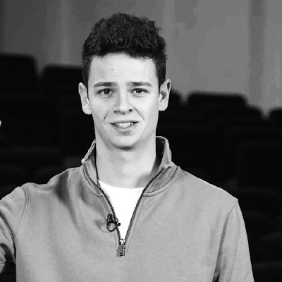

Contact
Questions about the program, registration, or breakout sessions? Get in touch with the organizers.
 MaCSBio (Maastricht Centre for Systems Biology and Bioinformatics), Maastricht University, Netherlands
MaCSBio (Maastricht Centre for Systems Biology and Bioinformatics), Maastricht University, Netherlands

Dries Heylen

Questions about the program, registration, or breakout sessions? Get in touch with the organizers.
MaCSBio (Maastricht Centre for Systems Biology and Bioinformatics), Maastricht University, Netherlands
